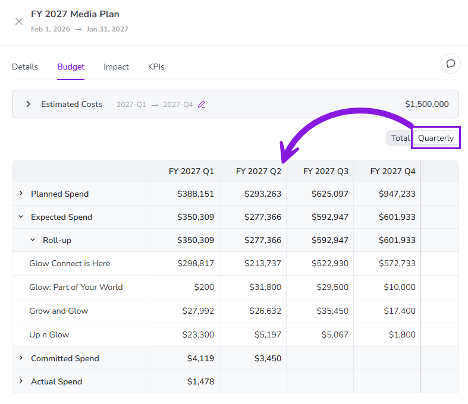
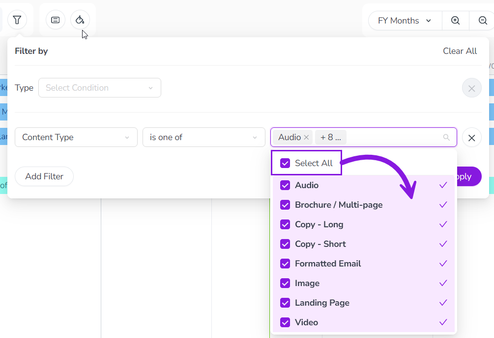
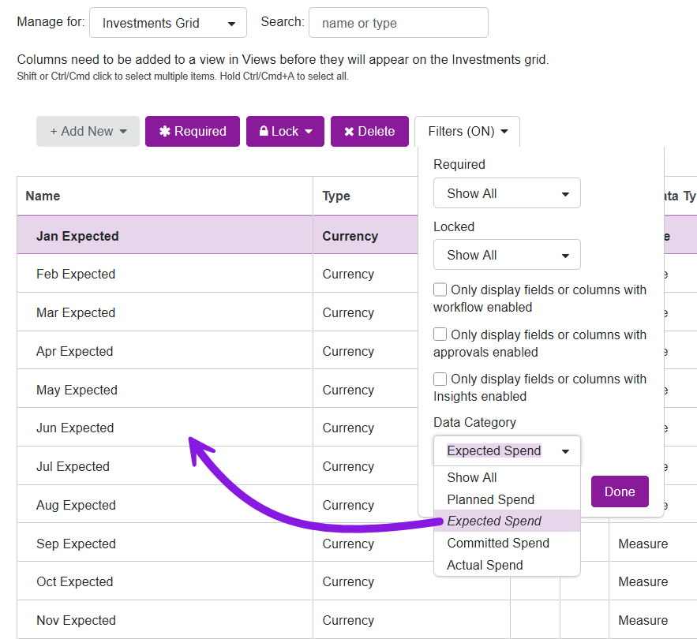

What's new: 2026.3
Discover all the new Uptempo functionality introduced with the 2026.3 release, available from March 25, 2026.
Campaign Management: Activities
Track activity funding by period
You can now view activity funding breakdowns by quarter or fiscal year at every level of your activity hierarchy to get more visibility into when money is being spent.
View connected investments by quarter or fiscal year: On any activity, you can now view quarterly and annual breakdowns of connected investments to get a more granular view of spend timing. For investments that span multiple years, you can also see separate breakdowns for each fiscal year.
Prevent budget overages: At the tactical level, you can now see exactly when spend hits the ledger, making it easy to catch overspending in a quarter before it impacts your annual budget health.
Get big-picture oversight: You can view activity funding breakdowns at any level of the activity hierarchy, eliminating the need to drill into individual tactic-level activities or export data for manual reconciliation.
{kind=link}

Filter activities by attribute faster with "Select All"
When you filter the activity hierarchy based on an attribute, you can now select every available attribute value with a single click.
Instead of selecting attribute values individually, use the new Select All option to instantly capture every value and save time.
{kind=link}

Financial Management: Budgets
Filter budget columns by Data Category
You can now filter the list of budget columns to show only columns with a certain Data Category.
Spend less time searching for columns: Use the new filter within the budget settings interface to quickly isolate columns by Data Category (such as Planned, Expected, Committed, and Actual), eliminating the need to manually scroll through a long list of columns to find a specific field.
Improve setup accuracy: Filtering by Data Category adds the necessary context to prevent configuration errors, such as updating the wrong field when multiple columns have similar names.
{kind=link}
